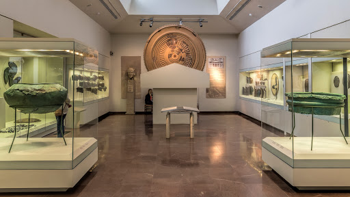
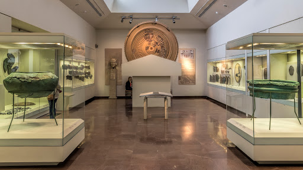

Олимпия
И най-дългото пътуване започва с една малка стъпка...
Лао Дзъ
 

Олимпия (Гърция) е град с дълга история и култура, един от най-старите в целия свят. На това място преди повече от 2500 хиляди години възникнаха и се проведоха Олимпийските игри. Днес руините на града са обект на ЮНЕСКО за световно наследство.
В подножието на хълма Кронион, в северозападната част на полуостров Пелопонес, се намира уникален археологически комплекс. Градът Олимпия в Гърция е едно от най-посещаваните места. Днес милиони туристи идват в Елида, за да посетят местата, където олимпийските шампиони тренираха през първото хилядолетие преди Христа.
Днес Олимпия може да бъде официално разделена на две части: древна и съвременна. На територията на новия град има хотели, кафенета и ресторанти. В стария град са забележителностите на Олимпия, благодарение на които хиляди туристи идват в Гърция. Сред тях заслужава да се подчертае:
Храм на Хера (съпруга на Зевс)
Построен е през 600 г. пр.н.е. като подарък за победителите в Игрите от жителите на Елис. Днес от оригиналната конструкция остана само фундаментът, намиращ се в долната част на колоните.
Храм на Зевс в Олимпия
Някога имаше статуя на Зевс - едно от 7-те чудеса на света, днес туристите могат да видят само определени елементи от архитектурния комплекс. Това е един от най-почитаните храмове в цяла Гърция.
Древен стадион
Намира се от източната страна на описаните храмове. Стадионът, с площ от 7 000 квадратни метра, побира над 40 хиляди зрители. Тук са запазени каменни трибуни за съдиите, пътеки за бягане и арка, през които съдии и спортисти са влизали на терена.
Можете още да видите:
Музей на разкопките
Музей на историята на древните олимпийски игри
Археологически музей